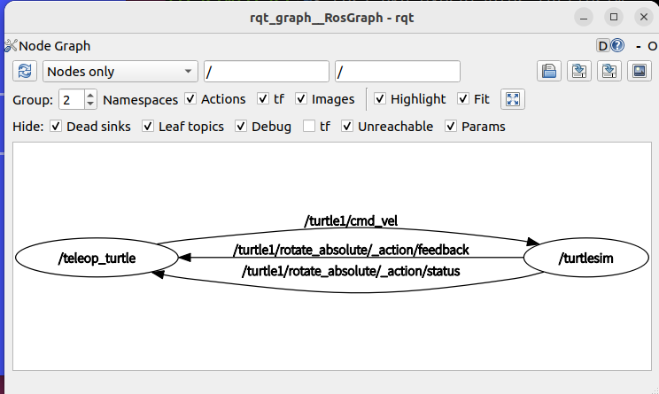

<!DOCTYPE lake>
<h1 data-lake-id="PO1C9" id="PO1C9"><span data-lake-id="uc29682dc" id="uc29682dc">介绍</span></h1><p data-lake-id="u7b46985f" id="u7b46985f" style="text-indent: 2em"><span class="lake-fontsize-12" data-lake-id="u041d947e" id="u041d947e">Turtlesim 是一个用于学习 ROS 2 的轻量级模拟器。它说明了 ROS 2 在最基本的层面上做了什么，让您了解您将在以后使用真实机器人或机器人模拟做什么。</span></p><p data-lake-id="u8ed20ac1" id="u8ed20ac1" style="text-indent: 2em"><span class="lake-fontsize-12" data-lake-id="ub0ba978f" id="ub0ba978f">rqt 是 ROS 2 的图形用户界面 (GUI) 工具。在 rqt 中所做的一切都可以在命令行上完成，但 rqt 提供了一种更加用户友好的方式来操作 ROS 2 元素。</span></p><h1 data-lake-id="VJ3Bz" data-lake-index-type="2" id="VJ3Bz"><span data-lake-id="u675439a2" id="u675439a2">安装turtlesim</span></h1><p data-lake-id="u3adfa05b" id="u3adfa05b"><span class="lake-fontsize-12" data-lake-id="u94e3992c" id="u94e3992c">检查是否安装了turtlesim</span></p><span class="yuque-card-unsupported">[codeblock]</span><p data-lake-id="u9f6c6d6c" id="u9f6c6d6c"><span class="lake-fontsize-12" data-lake-id="uc08f1f02" id="uc08f1f02" style="color: rgb(64, 64, 64); background-color: rgb(252, 252, 252)">上面的命令应该返回 turtlesim 的可执行文件列表：</span></p><span class="yuque-card-unsupported">[codeblock]</span><p data-lake-id="u47362eaf" id="u47362eaf"><span class="lake-fontsize-12" data-lake-id="ud17464b8" id="ud17464b8">如果没有出现上面的列表,说明没有安装turtlesim,可以使用如下命令安装:</span></p><span class="yuque-card-unsupported">[codeblock]</span><h1 data-lake-id="O9tyf" data-lake-index-type="2" id="O9tyf"><span data-lake-id="uc5b79125" id="uc5b79125">启动turtlesim</span></h1><p data-lake-id="u6e860f9f" id="u6e860f9f"><span class="lake-fontsize-12" data-lake-id="u17203243" id="u17203243" style="color: rgb(64, 64, 64); background-color: rgb(252, 252, 252)">要启动 turtlesim，请在终端中输入以下命令：</span></p><span class="yuque-card-unsupported">[codeblock]</span><p data-lake-id="u9118223e" id="u9118223e"><span class="lake-fontsize-12" data-lake-id="u96c1c4a1" id="u96c1c4a1" style="color: rgb(64, 64, 64); background-color: rgb(252, 252, 252)">模拟器窗口应该会出现，中间有一只随机的乌龟。</span></p><p data-lake-id="ueb6c0195" id="ueb6c0195"></p><h1 data-lake-id="IPjny" data-lake-index-type="2" id="IPjny"><span data-lake-id="u1cc63052" id="u1cc63052" style="color: rgb(64, 64, 64); background-color: rgb(252, 252, 252)">使用turtlesim</span></h1><p data-lake-id="u5fae2e6a" id="u5fae2e6a"><span class="lake-fontsize-12" data-lake-id="u08173aba" id="u08173aba">打开一个新终端并再次源 ROS 2。</span></p><p data-lake-id="uf53f451d" id="uf53f451d"><span class="lake-fontsize-12" data-lake-id="u21998775" id="u21998775">现在您将运行一个新节点来控制第一个节点中的海龟：</span></p><span class="yuque-card-unsupported">[codeblock]</span><h1 data-lake-id="DtODN" data-lake-index-type="2" id="DtODN"><span data-lake-id="u6e1b203b" id="u6e1b203b">安装rqt</span></h1><p data-lake-id="uab7a08ad" id="uab7a08ad"><span class="lake-fontsize-12" data-lake-id="ud9727086" id="ud9727086" style="color: rgb(64, 64, 64); background-color: rgb(252, 252, 252)">打开一个新的终端来安装</span><span class="lake-fontsize-9" data-lake-id="u57072186" id="u57072186" style="color: rgb(231, 76, 60)">rqt</span><span class="lake-fontsize-12" data-lake-id="u83d4c9a0" id="u83d4c9a0" style="color: rgb(64, 64, 64); background-color: rgb(252, 252, 252)">及其插件：</span></p><span class="yuque-card-unsupported">[codeblock]</span><h1 data-lake-id="zC1pT" data-lake-index-type="2" id="zC1pT"><span data-lake-id="u54fc8a0d" id="u54fc8a0d">运行rqt</span></h1><span class="yuque-card-unsupported">[codeblock]</span><h1 data-lake-id="Y9tvX" data-lake-index-type="2" id="Y9tvX"><span data-lake-id="ua47dc368" id="ua47dc368">运行rqt_graph</span></h1><span class="yuque-card-unsupported">[codeblock]</span><blockquote data-lake-id="u14857530" id="u14857530"><p data-lake-id="u963cc3d9" id="u963cc3d9"><span class="lake-fontsize-12" data-lake-id="ue1ea91a5" id="ue1ea91a5">查看节点间通信方式</span></p></blockquote><p data-lake-id="ud72c80fc" id="ud72c80fc"></p><p data-lake-id="u97391709" id="u97391709"><br/></p><p data-lake-id="u47cc9815" id="u47cc9815"><br/></p><p data-lake-id="ued243faa" id="ued243faa"><span data-lake-id="u1eb30f5d" id="u1eb30f5d">rqt 和 rqt_graph 都是 ROS (机器人操作系统)中常用的工具,但它们有一些不同之处:</span></p><p data-lake-id="u9a3bb24a" id="u9a3bb24a"><span data-lake-id="uc2d4e078" id="uc2d4e078">​</span><br/></p><p data-lake-id="uc1f832b0" id="uc1f832b0"><strong><span data-lake-id="u987c2f3a" id="u987c2f3a">目的不同:</span></strong></p><p data-lake-id="uc1ddcd6b" id="uc1ddcd6b" style="text-indent: 2em"><span data-lake-id="u71b04603" id="u71b04603">rqt 是一个通用的 ROS GUI 工具,它提供了多种插件,可以用于监控、调试和配置 ROS 系统。</span></p><p data-lake-id="u124e2904" id="u124e2904" style="text-indent: 2em"><span data-lake-id="ud006bf06" id="ud006bf06">rqt_graph 是 rqt 的一个插件,专门用于可视化显示 ROS 节点和消息通信的关系。</span></p><p data-lake-id="ud08dc7b6" id="ud08dc7b6"><strong><span data-lake-id="u66a0f965" id="u66a0f965">功能不同:</span></strong></p><p data-lake-id="u253474a3" id="u253474a3" style="text-indent: 2em"><span data-lake-id="ucc4ccc5e" id="ucc4ccc5e">rqt 可以执行各种任务,如查看话题列表、检查节点状态、调整参数等。</span></p><p data-lake-id="u709185c1" id="u709185c1" style="text-indent: 2em"><span data-lake-id="u94d1ee58" id="u94d1ee58">rqt_graph 主要用于生成 ROS 节点和话题之间的依赖关系图,帮助用户更好地理解和调试 ROS 系统。</span></p><p data-lake-id="u568a1c4f" id="u568a1c4f"><strong><span data-lake-id="ubab84005" id="ubab84005">使用方式不同:</span></strong></p><p data-lake-id="ud775ace7" id="ud775ace7" style="text-indent: 2em"><span data-lake-id="udac08404" id="udac08404">rqt 是一个综合性的工具,启动后会加载多个插件,用户可以根据需要切换不同的插件界面。</span></p><p data-lake-id="ua6e60cc2" id="ua6e60cc2" style="text-indent: 2em"><span data-lake-id="u3023dad3" id="u3023dad3">rqt_graph 是 rqt 的一个特定插件,用户需要在 rqt 中启动 rqt_graph 插件来查看节点和话题的关系图。</span></p><p data-lake-id="u113da169" id="u113da169" style="text-indent: 2em"><span data-lake-id="u519e5cc2" id="u519e5cc2">​</span><br/></p><p data-lake-id="u4499c665" id="u4499c665"><span data-lake-id="u564caca3" id="u564caca3">总的来说, rqt 是一个集成了多种功能的 GUI 工具,而 rqt_graph 是其中专注于可视化 ROS 系统拓扑的一个插件。两者结合使用可以帮助开发者更好地理解和调试 ROS 应用程序。</span></p><p data-lake-id="uccf7faf5" id="uccf7faf5"><span class="lake-fontsize-12" data-lake-id="u7826cae8" id="u7826cae8">​</span><br/></p><p data-lake-id="u9837082a" id="u9837082a"><br/></p>